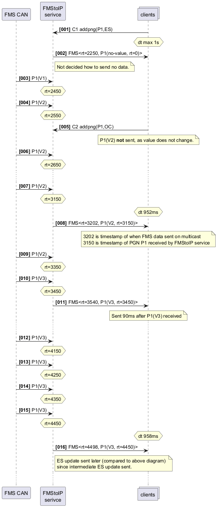

@startuml
skinparam lengthAdjust none
autonumber "<b>[000]"
participant BusFMS as "FMS CAN"
participant FMSSrv as "FMStoIP\nserivce"
collections clients
clients -> FMSSrv: C1 addpng(P1,ES)
hnote over clients: dt max 1s
FMSSrv -> clients: FMS<rt=2250, P1(no-value, rt=0)>
note right FMSSrv: Not decided how to send no data.
BusFMS -> FMSSrv: P1(V1)
hnote over FMSSrv: rt=2450
BusFMS -> FMSSrv: P1(V2)
hnote over FMSSrv: rt=2550
clients -> FMSSrv: C2 addpng(P1,OC)
note over clients: P1(V2) **not** sent, as value does not change.
BusFMS -> FMSSrv: P1(V2)
hnote over FMSSrv: rt=2650
...
BusFMS -> FMSSrv: P1(V2)
hnote over FMSSrv: rt=3150
hnote over clients: dt 952ms
FMSSrv -> clients: FMS<rt=3202, P1(V2, rt=3150)>
note over clients: 3202 is timestamp of when FMS data sent on multicast\n3150 is timestamp of PGN P1 received by FMStoIP service
BusFMS -> FMSSrv: P1(V2)
hnote over FMSSrv: rt=3350
BusFMS -> FMSSrv: P1(V3)
hnote over FMSSrv: rt=3450
FMSSrv -> clients: FMS<rt=3540, P1(V3, rt=3450)>
note over clients: Sent 90ms after P1(V3) received
...
BusFMS -> FMSSrv: P1(V3)
hnote over FMSSrv: rt=4150
BusFMS -> FMSSrv: P1(V3)
hnote over FMSSrv: rt=4250
BusFMS -> FMSSrv: P1(V3)
hnote over FMSSrv: rt=4350
BusFMS -> FMSSrv: P1(V3)
hnote over FMSSrv: rt=4450
hnote over clients: dt 958ms
FMSSrv -> clients: FMS<rt=4498, P1(V3, rt=4450)>
note right FMSSrv: ES update sent later (compared to above diagram) \nsince intermediate ES update sent.
...
@enduml